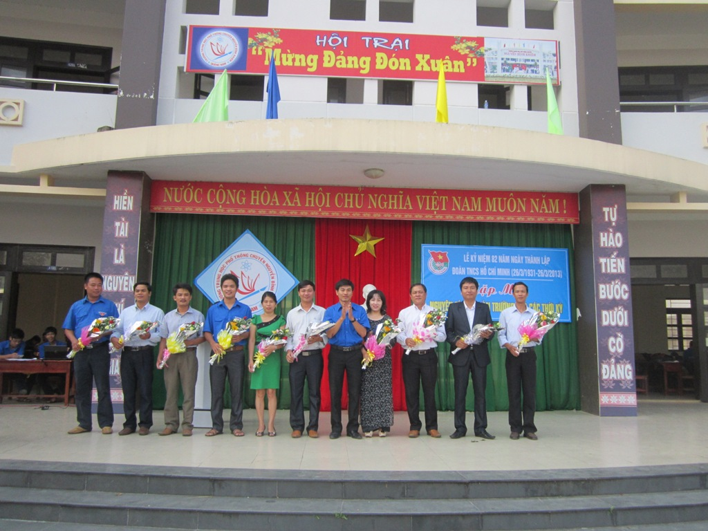

ĐOÀN TRƯỜNG THPT CHUYÊN NGUYỄN BỈNH KHIÊM TỔ CHỨC LỄ KỶ NIỆM 82 NĂM NGÀY THÀNH LẬP ĐOÀN VÀ GẶP MẶT NGUYÊN CÁC BÍ THƯ ĐOÀN TRƯỜNG QUA CÁC THỜI KỲ.

Lần cập nhật cuối lúc Thứ hai, 25 Tháng 3 2013 10:47 Viết bởi Administrator Thứ hai, 25 Tháng 3 2013 10:36
Nhằm ôn lại những truyền thống vẽ vang của Đoàn TNCS Hồ Chí Minh và truyền thống của Đoàn trường THPT chuyên Nguyễn Bỉnh Khiêm.
Sáng ngày 25/3/2013 Đoàn trường THPT chuyên Nguyễn Bỉnh Khiêm tổ chức lễ kỷ niệm 82 năm ngày thành lập đoàn TNCS Hồ Chí Minh (26/3/1931-26/3/2013)

Các thầy cô nguyên bí thư Đoàn trường qua các thời kỳ
Về tham dự lễ cố đồng chí Trần Trung ủy viên BCH Thành đoàn Tam Kỳ, Thầy Nguyễn Đình Tiến Bí thư chi bộ Hiệu trưởng nhà trường cùng các Thầy, Cô trong Hội đồng sư phạm nhà trường và hơn 700 ĐV – TN, đặc biệt sự có mặt của 11 Thầy, Cô nguyên là Bí thư đoàn trường qua các thời kỳ hiện nay đang giảng dạy tại trường THPT chuyên Nguyễn Bỉnh Khiêm. Tại buổi lễ Đồng chí Châu Văn Thọ Bí thư đoàn trường đã phát biểu ôn lại những truyền thống vẽ vang của Đoàn Thanh niên Cộng sản Hồ Chí Minh và truyền thống của Đoàn trường THPT chuyên Nguyễn Bỉnh Khiêm.
Đồng chí Châu Văn Thọ thay mặt cho tuổi trẻ nhà trường phát biểu cảm ơn và tặng hoa cho những đồng chí nguyên là Bí thư Đoàn qua các thời kỳ đã có những đóng góp xây dựng cho tổ chức Đoàn trường ngày càng phát triển.
BCH đoàn trường đã tuyên dương khen thưởng cho 20 ĐV-TN đạt thành tích xuất sắc trong công tác đoàn và phong trào thanh niên trường học trong năm qua.
- 04/07/2013 11:00 - DANH SÁCH TRÚNG TUYỂN VÀO TRƯỜNG THPT CHUYÊN NGUYỄ…
- 14/05/2013 21:24 - CÔNG ĐOÀN TRƯỜNG THPT CHUYÊN NGUYỄN BỈNH KHIÊM TH…
- 25/04/2013 09:13 - TRƯỜNG THPT CHUYÊN NGUYỄN BỈNH KHIÊM ĐẠT THÀNH TÍ…
- 08/04/2013 09:06 - HỌC SINH TRƯỜNG THPT CHUYÊN NGUYỄN BỈNH KHIÊM ĐẠT …
- 26/03/2013 09:05 - Tân Thạnh: Tổ chức giao hữu bóng đá
- 21/03/2013 08:06 - TRƯỜNG THPT CHUYÊN NGUYỄN BỈNH KHIÊM TỔ CHỨC HỘI T…
- 20/03/2013 08:34 - ĐOÀN TRƯỜNG THPT CHUYÊN NGUYỄN BỈNH KHIÊM – QUẢNG …
- 15/03/2013 10:02 - CÔNG ĐOÀN TỔ CHỨC CÁC HOẠT ĐỘNG KỈ NIỆM NGÀY QTPN …
- 04/03/2013 07:44 - TỔ NGỮ VĂN TỔ CHỨC HỘI THI THUYẾT TRÌNH VĂN HỌC NĂ…
- 21/02/2013 10:06 - TRƯỜNG THPT CHUYÊN NGUYỄN BỈNH KHIÊM TỔ CHỨC HỘI T…